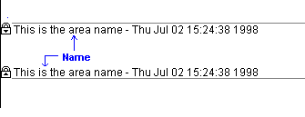

Properties Dialog Box |
The Properties dialog box allows you to control the appearance and interaction of selected regions on the Area, Calculation, Custom, Display, Protect, and Text tabs. You bring up this dialog by right-clicking on a region and choosing Properites. You can set the properties for multiple regions by first selecting them and then opening the Properties dialog box, but only those tabs applicable to all selected regions are available.
| Area tab |
Controls the appearance of locked and collapsible areas:
Enter a name for the area.

Show area boundaries by lines.
Place an icon to the left of each area boundary.
Show the area name.
Show the date and time the area was locked.
| Calculation tab |
Controls the evaluation of a selected region:
Turns off calculation on a math region and displays a black box at the right.
Turns Optimization on or off for a selected expression. Optimization allows the symbolic processor to simplify an expression before the numerical processor evaluates it.
| Custom tab |
Allows you to save metadata for a math region:
Choose the type of metadata to save from the dropdown list, or enter your own in the text field.
Choose the datatype for the metadata. Must be one of: Text, Date, Number, or Yes or No.
Enter the metadata you want to associate with the region, making sure that it matches the datatype you specified.
To associate the metadata with the region, click Add. To edit a particular value, select in in the table and click Modify. To remove a value, select it in the table and click Delete.
| Display tab |
Controls how regions appear:
Highlights a region with a color background.
Chooses a highlight color when "Highlight Region" is checked. To choose a highlight color for all the regions in a worksheet, choose Color > Highlight from the Format menu.
Adds a border around the selected region.
Displays an image at its original size.
Assigns a name to the selected region. You can use tags to hyperlink to a specific region in a worksheet.
| Index tab |
Allows you to add index entries to a region, separated by vertical bars (type |). These entries function as metadata for text and math regions and can be used for searching when creating a Mathcad E-book.
| Protect tab |
Flags the selected region for protection when you choose Protect Worksheet from the Tools menu:
Protecting regions only has an effect when the entire worksheet is protected. Once the worksheet is Content- or Editing-protected, these regions cannot be edited.
| Reference tab |
Allows you to edit a reference within a worksheet.
Enter the path or browse to the name of a file to reference. This file must be a worksheet that already exists, either on your computer or on the Internet. For example,
c:\program files\mathsoft\conform.xmcd or http://www.ptc.com/go/mathsoft/coeffs.xmcd
Stores the location of the referenced file relative to the worksheet containing the reference. Maintains the reference as long as you move the two files keeping the relative directory structure between them the same.
To use a relative path, the two worksheets must be on the same local or network drive. The relative path may display as a full path, but the relative path is saved internally. You must save your file before you can use this option.
| Text tab |
Affects how the selected text regions interact with other regions:
Forces a text region to expand to the full width of the page.
Makes a text region push other regions out of its way as it expands, rather than overlap them.